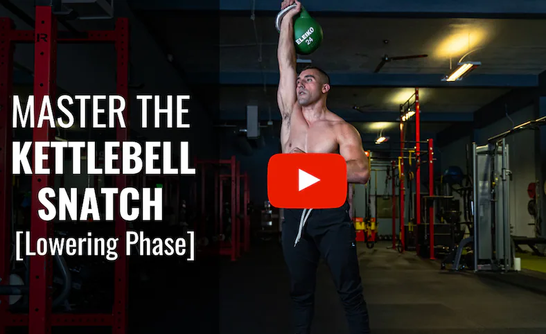

B248 · What can you accomplish in one hour?
Hi {first_name},
What can you accomplish in one hour?
From time to time, one thing I enjoy doing is testing my focus when it comes to work and productivity.
If you're curious about what I mean by "testing my focus," let me explain...
You see, I've realized over the years that just because we may be at work for 8 hours a day, that certainly does not mean all those hours are productive and focused. In fact, from what I see with clients, as well as have experienced myself in the past, is that even getting in an hour of focused work can be a challenge.
To test my focus and productivity, I will set a timer at varying durations, for example:
The goal is for whatever duration you set, to be as focused as humanly possible during that time frame. This can also be a good way to find your ideal working time before needing a mental break to reset. I find it truly incredible what even just 15 minutes of focused work can do.
After each block of time, I will get up, stretch my arms over my head, and sip some water. After longer dedicated work blocks, when I get up I will often listen to my favorite song, perform a stretch, or mini-meditation.
So why am I bringing this all up?
Well, mainly because I want to see you operating at a high level of focus, productivity, and performance on a daily basis.
As my way to connect and support you in this, I have just started a complementary Zoom Call on Thursdays at 9:30amPST / 12:30pm EST, called "The Training Room," that you are invited to. The call will be one hour in duration ; )
I will be hosting this with good friend, colleague, and Master Coach Dr. Drew Vercellino. You are free to bring all your questions : )
We will talk and provide in-depth breakdowns on key areas where ever you need support most:
If this is something you are interested in, please reply to this email, and just before the call, you will receive a Zoom Link via email.
Oh! And another thing I'm excited to share is my new Youtube video is up! This week is another installment of Back to Basics, this time focusing on the Kettlebell Snatch (lowering phase).
CLICK HERE TO WATCH THE VIDEO

The lowering phase is a portion of the lift that tends to give a lot of people trouble due to its technicality. I guarantee, if you incorporate even just one of the tips I give in this video, it has the power to transform how you lift entirely.
I hope you love it, and I hope to see you in "The Training Room," Thursdays at 9:30amPST (remember to send a reply to this email if you'd like the link to join).
All the best, Mike
P.S. I'd like to extend an invitation to you to see if you're the right fit for a select few spots for free 20 minute Zoom peak performance session. This call is mainly for those seeking to regain or improve the strength and control of their body in a graceful way. The goal of this call is to walk you through a process of digging into where are the main bottlenecks in your health and performance, co-creating a plan to elevate your game, and determine what actions need to happen immediately if you are to truly realize your peak potential. Click here to learn more and apply. |